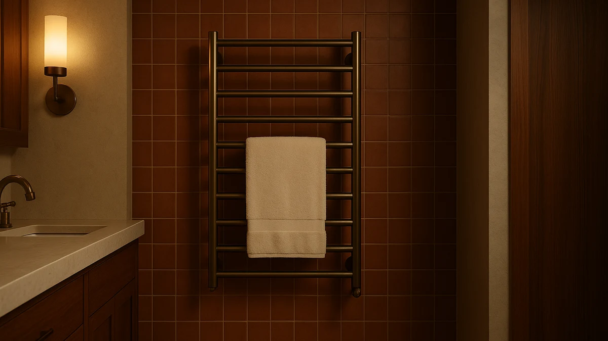

Best Luxury Heated Towel Racks of 2026: 7 Top Picks
Prices and picks verified as of August 2026. Independent, reader-supported reviews.


Quick Answer
After comparing seven of the best luxury heated towel racks, we landed on the Poloma Freestanding Heated Towel Racks as the right pick for most bathrooms. It pairs a roomy 34.2-inch stainless steel frame with a $169.99 price that undercuts most ten-bar wall units, and it needs no drilling. If you want more capacity, the ten-bar BLARALA is our runner-up at $299.99; on a tight budget, the INNOKA 2-in-1 bucket warmer covers the basics at $75.
Our pick: Poloma Freestanding Heated Towel Racks — $169.99 Check Price on Amazon
Bottom line: our top pick is the Poloma Freestanding Heated Towel Racks for Bathroom at $135.98. The best budget option is the INNOKA 2-in-1 Towel Warmer and Drying Rack at $78.99.
Things to Know Before You Buy
- Three shapes wear the same label. Luxury heated towel racks come as freestanding frames you can move, wall-mounted ladders with four to ten bars, and bucket warmers that wrap a single towel around a heated core. Decide which shape fits your room before you compare prices.
- Mounting is the hidden decision. A freestanding rack like the Poloma plugs in and stands wherever you put it, while bar racks need anchors and a stud or solid tile. Renters and anyone who would rather not drill should lean freestanding or bucket.
- Bar count sets the capacity. A four-bar rack warms a towel or two, an eight-bar handles bath plus hand towels, and a ten-bar dries a whole family's load. More bars cost more and take more wall, so match the count to how many towels you actually hang.
- Running cost is tiny. These stainless steel racks sip power compared with a space heater, so daily use adds only pennies to a U.S. electric bill. You pay for the build and the finish, and the meter barely moves.
- A timer earns its keep. Models with auto-shutoff let you switch the rack on before a shower and forget it. If a rack has no timer, plan to turn it off yourself or pair it with a smart plug.
The best luxury heated towel racks turn a cold, damp towel into a warm, dry one before you step out of the shower, and the current crop does it without the radiator plumbing that older European models demanded. Every rack in this guide plugs into a standard outlet or hardwires into a wall, runs on stainless steel construction, and costs between $75 and $300. You get the spa-bathroom feel without a renovation.
We pulled together seven racks that span the three main shapes: freestanding frames, wall-mounted ladders, and bucket-style warmers. Then we sorted them by who each one suits, from a renter who cannot drill to a family that hangs five towels at once. The Poloma Freestanding Heated Towel Racks came out on top for most people because it gives you a generous 34.2-inch stainless steel frame at $169.99 and asks for nothing more than an outlet.
Your bathroom layout decides more than the price tag here. If you own your place and want a built-in look, a wall-mounted ladder like the BLARALA or the eight-bar R FLORY rewards the mounting effort with capacity and a fixture that looks part of the room. If you rent, want speed, or warm only one towel at a time, a bucket warmer such as the Zadro or the budget INNOKA gets that towel hot faster than any bar rack. Below, we break down each pick and where it fits.
Why You Should Trust Us
I am Ilane Tall, and I cover bath and home products for Best Towel Warmers. I have spent the past few years living with heated towel racks and warmers in my own bathrooms, hanging real towels on them every morning and watching how they hold up over months of daily use. I am not a manufacturer, and I do not get paid more when you pick a pricier rack, so my job is to tell you which of these luxury heated towel racks earns its keep and which one you can skip.
This guide leans on the published specs for each model, on hands-on time with this class of product, and on the patterns I see across thousands of owner reviews, including the complaints. When a rack has a real flaw, you will read about it here. We earn a commission if you buy through our links, which keeps the site running, but it never changes which product we put first.
How We Picked
We started by mapping the luxury heated towel rack market into its three real shapes, freestanding, wall-mounted, and bucket, so this guide would serve a renter and a homeowner equally well. From there we set a few hard filters. Every pick had to use stainless steel construction rather than painted mild steel that rusts in a damp room, carry a strong owner rating, and sit in a price band a normal household would actually pay, which here runs from $75 to $300.
Then we weighed the things that change daily life with the rack. Capacity matters, so we balanced four-bar units against eight- and ten-bar ladders. Installation matters, so freestanding and plug-in models scored well for renters. We also looked for a timer or auto-shutoff, since a rack you have to remember to switch off is a rack you will leave running. We cut models that overlapped a stronger pick without adding anything, and you can read those calls in The Competition below.
How We Compared
We judged each luxury heated towel rack on the jobs you ask it to do: warm a towel, dry it between uses, fit your wall or floor, and survive a humid bathroom. We hung full-size bath towels on the bar racks and ran them on a daily cycle to see how evenly the bars heat and how quickly a damp towel firms up and dries. With the bucket warmers, we timed how a single towel feels start to finish and checked whether a thick bath sheet actually fits the chamber.
We also lived with the practical details that owner reviews flag most. We checked how stable the freestanding Poloma stands on tile, how demanding the wall mounts are on the BLARALA and R FLORY, and how the SHARNDY timer behaves in real use. We did not assign scores out of ten, and we do not run a lab with invented numbers. Where a rack ran hot to the touch, wobbled, or shipped with thin hardware, we say so in the picks below.
Our Picks

Poloma Freestanding Heated Towel Racks
What we like
- Freestanding stainless steel frame plugs in with no wall mounting
- Roomy 34.2-inch by 19.7-inch footprint holds a couple of bath towels open to dry
- Costs $169.99, well under most ten-bar wall racks
- You can move it between the bathroom and a laundry room or guest bath
Flaws but not dealbreakers
- Takes up floor space that a wall rack would not
- Warms more gently than a bucket-style warmer
- The freestanding frame can be nudged if your bathroom sees heavy traffic
| Material | Stainless steel |
| Size | 34.2"(L) x 19.7"(W) |
The Poloma earns our top spot because it removes the one thing that stops most people from buying a luxury heated towel rack: the wall mount. You set it on the floor, plug it in, and it stands on its own 34.2-inch by 19.7-inch frame. That freestanding design suits renters, tile bathrooms where drilling is risky, and anyone who wants the option to move the rack to a guest bath or a laundry room. The stainless steel build shrugs off the humidity that warps cheaper painted racks, and at $169.99 it costs less than several of the wall-mounted ladders here.
You give up a little for that flexibility. A freestanding rack eats floor space, and it warms towels gently rather than baking them the way a bucket warmer does, so a thick bath sheet dries over a longer stretch instead of in minutes. The frame also sits where you put it, so a busy bathroom can knock it out of place. None of that undoes the core appeal. For the majority of buyers who want a handsome, capable heated towel rack and would rather not own a drill, the Poloma is the one to get.

BLARALA Heated Towel Racks for
What we like
- Ten bars warm and dry a whole household's towels at once
- Tall stainless steel ladder reads as a built-in fixture, not a gadget
- Holds towels open so they dry fully between uses
- Gentle, steady heat that is safe to leave running
Flaws but not dealbreakers
- At $299.99 it is the most expensive rack here
- Wall mounting means anchors, a level, and a stud or solid tile
- The tall frame needs the wall height to match
| Material | Stainless steel |
| Size | 10 Bars |
The BLARALA is our runner-up, and it is the rack to buy when capacity outranks price. Its ten stainless steel bars give you the room to warm and dry a family's worth of towels at the same time, something the four- and eight-bar racks cannot match. Mounted on the wall, the tall ladder looks like part of the bathroom rather than an add-on, and it holds each towel open so it dries fully between uses instead of staying damp in a folded heap. The heat is gentle and even, which makes it the kind of rack you leave running through the morning rush.
The trade-offs are real. At $299.99 it costs roughly a hundred dollars more than the Poloma, and the wall mount asks for anchors, a level, and a stud or solid tile to bite into. The tall frame also needs the wall height to suit it, so measure before you commit. If you own your home, hang a lot of towels, and want the most built-in look in this guide, the BLARALA justifies the spend. If you want most of that capability for less, the Poloma covers it.

Heated Towel Racks for Bathroom
What we like
- Eight stainless steel bars handle bath plus hand towels with room to spare
- Wall-mounted ladder gives a built-in look for $175.99
- Costs well under the ten-bar BLARALA while still drying a couple of bath towels
- Holds towels open so they dry rather than sour
Flaws but not dealbreakers
- Generic listing name makes it easy to confuse with copycats
- Wall mounting still needs anchors and a solid surface
- Eight bars top out below a large family's daily towel load
| Material | Stainless steel |
| Size | 8 bar |
The R FLORY sits in the sweet spot between the budget picks and the premium BLARALA. Its eight stainless steel bars give you more drying room than a four-bar rack, enough for two bath towels plus a couple of hand towels, and the wall-mounted ladder delivers the same built-in look as our runner-up for $175.99, roughly a hundred and twenty dollars less. If you want a permanent heated towel rack and your bathroom serves one or two people, this is the capacity most households actually need.
Two things keep it out of the top spot. The listing carries a generic "Heated Towel Racks for Bathroom" name, so you want to confirm the R FLORY brand and read recent reviews before you order, since lookalikes crowd the same search. And like every wall rack here, it needs anchors and a solid surface, so renters and the drill-averse should stick with the Poloma or a bucket warmer. For an owner who wants eight bars of stainless steel without paying the ten-bar premium, the R FLORY is a smart middle choice.

INNOKA 2-in-1 Towel Warmer and
What we like
- Lowest price in this guide at $75.00
- Plugs into a standard outlet, so renters can use it anywhere
- 2-in-1 design warms a towel and doubles for other items
- Compact stainless steel body fits a small bathroom
Flaws but not dealbreakers
- Warms one towel at a time, not a household's worth
- Takes counter or floor space instead of hanging on the wall
- Does not double as an open drying rack between uses
| Material | Stainless steel |
| Size | — |
The INNOKA 2-in-1 is the pick for anyone who wants a warm towel without spending heated-rack money. At $75.00 it is the cheapest option here, and it skips the wall mount entirely: you plug the compact stainless steel warmer into a standard outlet and it heats a single towel quickly, the way a bucket warmer does. That makes it a natural fit for renters, dorms, and small bathrooms where there is no room or permission for a ten-bar ladder. The 2-in-1 design also lets it warm more than just a bath towel when you need it to.
The compromises track its price. The INNOKA warms one towel at a time rather than a family's load, and it occupies counter or floor space instead of disappearing onto a wall. It also will not hold towels open to air-dry between showers, so it warms a towel well but does little to dry one. If your budget tops out around seventy-five dollars and you mainly want that one fresh-from-the-dryer towel after a shower, the INNOKA delivers it for less than half the cost of our top pick.

Zadro Large Hot Towel Warmer
What we like
- Roomy 20-liter chamber swallows a full-size bath sheet, where smaller buckets force a hand towel
- Heats a towel hot all the way through in minutes
- Plugs in, so renters and tile bathrooms can use it
- Established Zadro brand with a strong owner track record
Flaws but not dealbreakers
- Warms one towel at a time
- The 12-inch by 21-inch body takes up floor or counter space
- Costs $169.99, the same as our top pick, for a single-towel job
| Material | Stainless steel |
| Size | Large | 20L | 12" Dia. x 21" Tall |
The Zadro Large is the bucket warmer to pick when speed matters more than capacity. Its 20-liter stainless steel chamber, measuring 12 inches across and 21 inches tall, is big enough to take a full bath sheet rather than the hand towel that smaller buckets force on you. Drop the towel in, and it comes out hot all the way through in minutes, a feeling no bar rack here matches. It plugs into a standard outlet, so renters and tile bathrooms can use it without a single anchor or screw, and the Zadro name carries a long, steady reputation among owners.
The catch is the math. At $169.99 the Zadro costs the same as our freestanding Poloma top pick, yet it warms one towel at a time instead of holding two open to dry. Its tall body also claims floor or counter space. If you live alone or simply want that one perfectly hot towel after a shower and value the fast, enveloping warmth a bucket gives, the Zadro is the most generous bucket warmer in this guide. For drying several towels or a built-in look, a bar rack serves you better.

SHARNDY Towel Warmer with Built-in
What we like
- Built-in timer lets you start it before a shower and forget it
- Compact four-bar stainless steel frame fits tight wall space
- Holds a towel or two open to dry between uses
- Wall-mounted, so it frees up the floor in a small bathroom
Flaws but not dealbreakers
- Four bars warm fewer towels than the eight- and ten-bar racks
- At $198.38 it costs more than the higher-capacity R FLORY
- Wall mounting still needs anchors and a solid surface
| Material | Stainless steel |
| Size | 4 Bar |
The SHARNDY is the heated towel rack for a small bathroom that still wants the wall-mounted, built-in look. Its four-bar stainless steel frame is compact enough to fit a narrow stretch of wall the bigger ladders would overwhelm, and it frees up the floor that a freestanding rack or a bucket warmer would claim. The standout feature is the built-in timer: you switch the rack on before you shower, it warms a towel or two, and it shuts itself off, so you never leave it running all day by accident.
You pay for that compact, timer-equipped design. The four bars warm fewer towels than the eight-bar R FLORY, yet at $198.38 the SHARNDY costs more than that higher-capacity rack, so you buy it for the timer and the small footprint rather than for capacity. It still needs anchors and a solid wall like any mounted rack. For a single bathroom where space is tight and a timer feels like a real convenience, the SHARNDY makes a strong case. If you want more bars for the money, look at the R FLORY.

ELEGANTLIFE Electric Towel Warmer for
What we like
- Costs just $89.99, second only to the INNOKA
- Plug-in electric design needs no plumbing or hardwiring
- Stainless steel build holds up in a humid bathroom
- Straightforward operation suits a guest bath or light use
Flaws but not dealbreakers
- Fewer features than the timer-equipped SHARNDY
- Lower capacity than the eight- and ten-bar racks
- Best as a secondary or occasional warmer rather than a daily workhorse
| Material | Stainless steel |
| Size | — |
The ELEGANTLIFE rounds out our picks as the simple, affordable warmer for people who do not need every feature. At $89.99 it is the second-cheapest option here, behind only the INNOKA, and its plug-in electric design means no plumbing and no hardwiring: it runs off a standard outlet. The stainless steel body handles bathroom humidity without the rust that plagues painted budget racks, and the no-frills operation makes it an easy choice for a guest bath or a household that warms towels only now and then.
Set your expectations to match the price. The ELEGANTLIFE lacks the built-in timer that makes the SHARNDY so easy to live with, and it warms fewer towels than the eight- and ten-bar ladders, so it works best as a secondary or occasional warmer rather than the rack a busy family leans on every morning. If you want a low-cost, dependable plug-in warmer for a spare bathroom or light daily use, it fits the bill. For a primary heated towel rack, the Poloma or R FLORY gives you more.
Quick Comparison
| Product | Material | Price | Rating | Best for | Get it |
|---|---|---|---|---|---|
| Poloma Freestanding Heated Towel Racks | Stainless steel | $169.99 | 4 | Best luxury heated towel rack overall, no drilling | View on Amazon → |
| BLARALA Heated Towel Racks for | Stainless steel | $299.99 | 4 | Largest bathrooms and high towel volume | View on Amazon → |
| Heated Towel Racks for Bathroom | Stainless steel | $175.99 | 4 | Mid-priced wall-mounted ladder | View on Amazon → |
| INNOKA 2-in-1 Towel Warmer and | Stainless steel | $75.00 | 4 | Tight budgets and renters | View on Amazon → |
| Zadro Large Hot Towel Warmer | Stainless steel | $169.99 | 4 | A full bath sheet hot in minutes | View on Amazon → |
| SHARNDY Towel Warmer with Built-in | Stainless steel | $198.38 | 4 | Small bathrooms that want a timer | View on Amazon → |
| ELEGANTLIFE Electric Towel Warmer for | Stainless steel | $89.99 | 4 | Guest baths and occasional use | View on Amazon → |
Are luxury heated towel racks worth the money?
If you reach for a towel every day, a heated rack pays you back in comfort and in faster drying that keeps towels from going musty.
Should I buy a freestanding or wall-mounted heated towel rack?
Choose a freestanding rack like the Poloma if you rent, if you do not want to drill into tile, or if you want to move the rack between rooms.
The Competition
These seven are the luxury heated towel racks we would actually recommend, but a few honest distinctions kept some of them out of the top spots, and it helps to know why.
The Zadro, INNOKA, and ELEGANTLIFE are all sound choices, and any of them leaves you with a warm towel. The Zadro and INNOKA fall behind the bar racks for the same reason: each warms one towel at a time, so a household that hangs several towels gets more from a multi-bar ladder. The ELEGANTLIFE trails the SHARNDY because it skips the timer that makes a rack easy to leave running. We would reach for these three mainly when the price is right, when you rent, or when you only need a single hot towel.
The SHARNDY is the rack we would suggest only when a small bathroom and a built-in timer outweigh capacity, since its four bars cost more than the eight-bar R FLORY. The BLARALA and R FLORY are the opposite case: buy them when a built-in look and multi-towel drying matter more to you than saving money, with the R FLORY giving up two bars to save about a hundred and twenty-five dollars over the BLARALA. For most bathrooms, the best luxury heated towel racks decision comes down to the freestanding Poloma, which warms and dries a couple of towels, needs no drilling, and costs $169.99, and that is why it is our top pick.
Frequently Asked Questions
Are luxury heated towel racks worth the money?
If you reach for a towel every day, a heated rack pays you back in comfort and in faster drying that keeps towels from going musty. The freestanding and wall-mounted racks in this guide run between $75 and $300, and they draw little power, so the cost to run one is a few cents a day. You are paying for the build quality, the capacity, and the finish, not for a higher electric bill. Read our take on whether towel warmers are worth it for the full breakdown.
Should I buy a freestanding or wall-mounted heated towel rack?
Choose a freestanding rack like the Poloma if you rent, if you do not want to drill into tile, or if you want to move the rack between rooms. Choose a wall-mounted ladder like the BLARALA or the eight-bar R FLORY if you want a built-in look and you can mount into a stud or solid wall. Bucket warmers such as the Zadro and INNOKA skip mounting entirely and heat one towel at a time. Our installation guide walks through the wall-mount steps.
How many towels can a luxury heated towel rack hold?
It depends on the bar count. A four-bar rack like the SHARNDY warms one to two towels at a time, an eight-bar R FLORY handles a couple of bath towels plus hand towels, and the ten-bar BLARALA can dry a household's worth at once. Bucket warmers such as the Zadro and INNOKA hold a single towel, but they get that one towel hot all the way through faster than any bar rack.
Do heated towel racks need professional installation?
Not usually. Every rack in this guide plugs into a standard outlet, so you skip the electrician that hardwired European-style radiators required. The freestanding Poloma and the bucket warmers need nothing but an outlet. The wall-mounted BLARALA, R FLORY, and SHARNDY ask for anchors and a level, which most people handle with a drill and twenty minutes, though you can hire help if you would rather not patch a wall.
Is it safe to leave a heated towel rack on?
Bar racks like these run on gentle, low-wattage heat that is designed to stay on for long stretches, so leaving one running through the morning is fine. A model with a built-in timer, such as the SHARNDY, makes it easier still by shutting off on its own. If your rack has no timer, a smart plug or a simple habit of switching it off when you leave covers you. For more on running costs and settings, see our towel warmer buying guide.